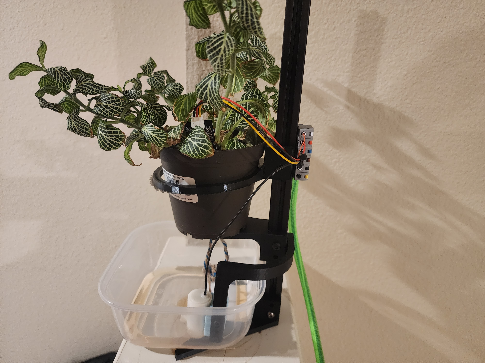
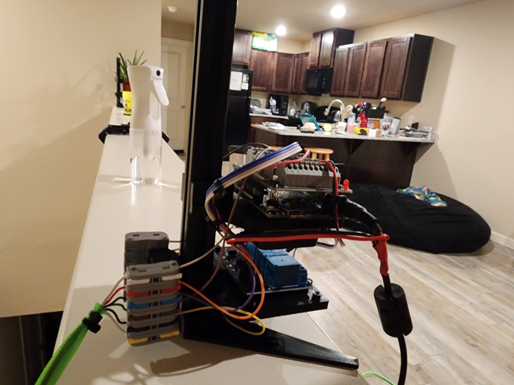
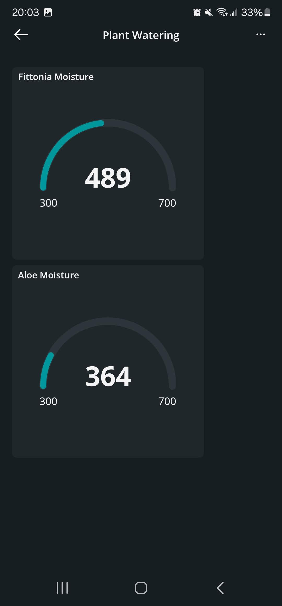
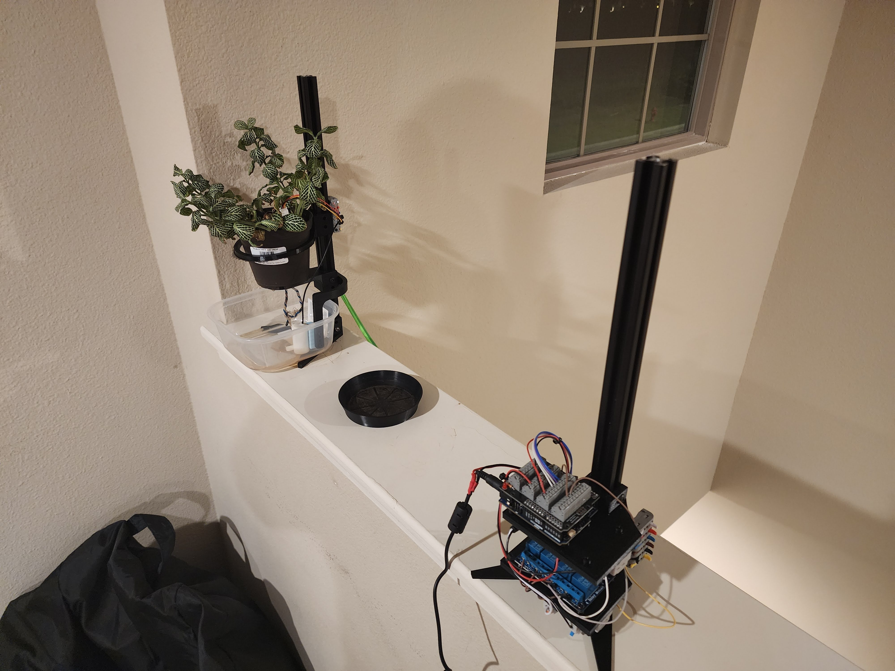

An automatic plant watering system with a singular controller for multiple plants using an amazon arduino watering kit and 3d prints.
System Overview
- Arduinos, Sensors, Electronics
- 3D printed casings
- IOT
Why?
Neighbors or freinds were asked to watch over my plants while traveling or on vacation. The plant watering schedule was different for both plants, which requried multiple entries and waterings. However, both plants had the same pot size.
V1
An automated plant watering kit using arduinos was purchased from amazon. The idea was to use the sensors, pumps, and electronics from the kit to make a modular system. The system included one singular brain and X pods. The brain would be used for power distribution and for IO control. The system should be able to grow alongside the plant collection.
The Brain
The brain box is the box that held the arduino and relays, as they should not be near water. The kit contains relays, pumps, and capacitive sensors. These were initially all wired together with the arduino to figure out how the system functions, and how to better modularize it. With each pod having it's own capacitive sensor and pump, the connection between the pods and brain can be uniform. Since the previous project was a 3D printer, four 6-pin male JST connectors are given to the brain. Each connector can have power and ground for the dc pump, and power, ground, and signal for the capacitive sensor. Power was split from a arduino power supply into both the arduino and some 1:5 pin connectors for the relay. The arduino sent out all of the logic signals to the relay to turn on the relays and make the dc pumps run. logic voltage was also given to the relay using the 1:5 pin connectors. The housing was 3d printed out of ABS and PLA for the sake of using what was already on the printers. The arduino and relay were meant to be mounted on vertical panels that could slide in and out of the housing for easy maintenance. There were four holes on the mounting meant for the four 6-pin male JST connectors.

The Pods
The system is meant to have multiple pods that each maintained a plant. Each pod was given a capacitive sensor to monitor each plant's hydration level, and a dc pump such that the plant can be hydrated appropriately. At the bottom of the pod exists a water reservoir where the pump lives. The pump moves the water up into the plant when needed. any excess water then drains through the plant and back onto the reservoir. The electrical interface for the pod exists right above the reservoir. The capacitive sensor would be on the inside of the plant pot. The housing can be separated into two for easier access into the reservoir. A cable consisting of wires, and two 6-pin female JST conenctors ran betwwen a port of the brain and the port on the pod.
V2
Both pots used for testing were not the same exact size.
This makes the one size fits all idea of the project slightly tougher.
More over, the slide out method for the brain's electronics did not aid in maintenance due to other added components being attached to the inside of the houseing.
The housing components took many hours each and iterations could be days in between each other.
For the sake of progress, a more modular approach was adopted.
The brain and pod system did not change functionaly.
All parts were designed and printed to fit onto 2020 aluminum extrusion.
 Each extrusion upright had feet that bolted to the bottom.
The brain had plates with space for the use of double sided tape and screws.
The pod had plats that held the plant up, held the plant in place.
Beneath the pods were clear tuperware containers.
This aided in seeing the water level and cleanliness.
This also makes it easier to ensure a watertight reservoir was used.
The male JST connectors were very annoying work with as they each had to be soldered onto 6 wires.
This was repeated 8 times, twice for each pod.
Instead, 6 pass through clip connectors were used when connecting the brain and pods.
Each extrusion upright had feet that bolted to the bottom.
The brain had plates with space for the use of double sided tape and screws.
The pod had plats that held the plant up, held the plant in place.
Beneath the pods were clear tuperware containers.
This aided in seeing the water level and cleanliness.
This also makes it easier to ensure a watertight reservoir was used.
The male JST connectors were very annoying work with as they each had to be soldered onto 6 wires.
This was repeated 8 times, twice for each pod.
Instead, 6 pass through clip connectors were used when connecting the brain and pods.
All compnents were printed from abs since they were fully stocked in inventory.
The pod pot holders were printed from TPU to allow them to strech to slightly different sized pots.


The arduino was replaced for an Arduino R4 Wifi, which could connect to the internet.
This allowed for interfacing and monitoring through a phone app.
CODE
The program connects an Arduino-compatible board to WiFi and retrieves accurate time using NTP. It uses scheduled time windows to decide when two plants (Fittonia and Aloe) should be watered. Each plant has its own soil moisture sensor and pump, along with a retry-based watering cycle. Once the moisture threshold is reached or the time limit is exceeded, watering stops and the cycle for that window is marked complete.
The code imports WiFi and NTP libraries to obtain the current time over the internet. A WiFiUDP object is created so the NTP client can communicate with the NTP server. An NTPClient is initialized to use the 0.us.pool.ntp.org server with an offset and 1-second update interval. Global variables store the time, moisture values, pump pins, and program state for each plant. Separate state variables track whether each plant’s watering is in progress, whether it already watered for the current window, and the last retry timestamp.
Pin Assignments and Moisture Sensors
Motor1 and Motor2 correspond to the pump control pins for Fittonia and Aloe. Sensor1 and Sensor2 are the analog moisture sensors for each plant. During setup, the motors are configured as outputs and default to HIGH, which means pumps start in the off state.
Main Structure
The loop() function calls wifiLoop() to update the time, then planterLoop() to read sensors and run watering logic. A one-second delay keeps the program readable and avoids excessive serial spam.
Wifi and Time Updates
In wifiSetup(), the code connects to a WiFi network and waits in a loop until the connection is successful. Once connected, the NTP client begins tracking time from the NTP server. In wifiLoop(), the NTP client retrieves the current time and stores it in a formatted HH:MM:SS string. The program extracts hour, minute, and second values, and also retrieves the day of the week.
Reading Moisture Values
planterLoop() reads both moisture sensors through analogRead(). The raw values are printed to the serial monitor for debugging. After reading the sensors, the function calls waterScheduler() to decide whether watering should occur.
Timing-Based Watering Scheduler
waterScheduler() determines whether the current time falls within the designated watering window for each plant. Fittonia is watered on day 1 and day 4 between 20:00:00 and 20:05:00. Aloe is watered only on day 1 during this same five-minute window. If a watering window opens and the plant has not been watered yet, a watering cycle begins and a timestamp is recorded. If the window closes, the "watered this window" flag is reset for the next schedule.
Retry-Based Watering Logic
Each plant uses a retry interval of five seconds to avoid rapid, repeated watering attempts. If watering is in progress and enough time has passed since the last attempt, the program tries again. The code calls either fittoniaControl() or aloeControl() to determine whether the pump should run or stop. If the moisture level reaches the threshold or the cycle times out after sixty seconds, watering is considered complete. When watering completes, the program updates state flags and stops the pump.
Plant Control Functions
Each control function reads the associated moisture sensor. If the soil is still dry or if the allowed watering time has passed, the pump is turned off. If the soil is wet enough and the timeout has not been reached, the pump is turned on. The function returns a boolean that indicates whether watering should continue or not. Elapsed time is printed to the serial output for monitoring.
Time Window Checking Helper
withinTime() parses the minimum, current, and maximum time strings into numeric components. It returns true when the current time falls between the defined start and end times. Only hours and minutes are effectively used in the range comparison logic.
Summary
This system creates an automated, time-scheduled, moisture-responsive watering system for two plants. It reliably retrieves real-world time using NTP. It only waters during defined weekday and time windows. It attempts watering in controlled five-second intervals. It stops watering when moisture reaches a defined threshold or when a time limit is exceeded. It ensures each plant is watered at most once per watering window.
FIN
This project was abandonded after the code was written. Before testing, the sensors were placed onto the pots. The overwelming feeling of the entire project feeling wrong after placing the sensors caused the project to come to a close.
